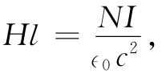

现在将考察某些简单情况，其中磁场为恒量、或场变化得足够缓慢以致同j传导 相比可以略去∂D/∂t，于是场将遵循方程组：
▽·B=0， （36.16）
▽×H=j传导 /∈0 c2 ， （36.17）
H=B-M/∈0 c2 . （36.18）
假设有一个由铜线圈包扎的铁环（炸面饼圈模样），如图36-7（a）所示。导线中有电流I流动。这样，磁场将会怎么样呢？磁场将主要存在于铁环之内，那里，B线将是一些圆圈，如图36-7（b）所示。由于B通量是连续的，所以它的散度便是零，而式（36.16）被满足。其次，通过绕图36-7（b）所示的闭合回路Γ进行积分而把式（36.17）写成另一种形式。根据斯托克斯定理，我们有
其中j的积分是对整个以Γ为边界曲面进行的。这个曲面被每一匝绕线穿过一次，每一匝对积分都贡献了电流I，若总共有N匝，则积分为NI。根据我们问题中的对称性，环绕曲线Γ各处的B都相同，若假定磁化强度——从而场H——沿着Γ也是恒定不变的，则式（36.19）变成

其中l为该曲线Γ的长度。因此，
正是因为在像这样一种情况下H与起磁电流成正比，所以H有时被称为磁化场 。
图36-7 （a）一个绕上了绝缘导线圈的铁环；（b）铁环截面中的场线
现在，只需要H与B有关的方程。但不存在任何这样的方程！当然，我们有个方程式（36.18），不过那没有什么帮助，因为对于像铁那样的铁磁性材料M与B之间并没有直接的关系。磁化强度M取决于铁的整个过去历史，而不仅取决于该时刻的B。
然而，并不是毫无希望。在某些简单情况下我们还是能够获得一些解答的。如果从未磁化的铁开始——让我们说该块铁已在高温下退了火——那么在铁环的简单几何中，全部铁就都有相同的磁性历史。这样，我们就能根据实验测量结果对M——从而对B和H间的关系——说出某些东西。根据式（36.20），铁环里的场H可以表示为一常数乘以绕线中的电流I。而场B则可通过对线圈中（或绕于图示的那个起磁线圈上面的另一个辅助线圈中）的电动势对时间的积分而量度出来。由于这个电动势等于B通量的变化率，因而电动势对时间的积分就等于B乘以该铁环的横截面积。
图36-8显示出用一个软铁环所观测到的B和H之间的关系。当电流初接通时，B沿曲线a随着H的增大而增大。要注意，B和H的不同标度。起初，只要相对小的H就能造成大的B。为什么用铁所得的B会比在空气中得到的大那么多呢？这是因为有一个大的磁化强度M，它等效于在铁上有一个较大的表面电流——场B来自这一电流与绕线中的传导电流之和 。为什么M会那么大，我们将在以后讨论。
图36-8 软铁的典型磁化曲线和磁滞回线
在H值较高时，磁化曲线趋于水平，我们就说铁块已经饱和 。按图上的那种标尺，曲线看来已变成水平。实际上，它稍微继续上升——对于强场来说，B变成正比于H，并有一单位斜率。M不再增加。顺便提一下，我们应该指出，假如该环是由某种非磁性材料制成的，则对于所有场M均应该为零，而B应等于H。
我们所注意到的第一件事，是图36-8中曲线a——通常所说的磁化曲线 ——的高度非线性。但更糟的是若达到了饱和之后，我们减少线圈里的电流使H回到零，则磁场B将沿曲线b下降。当H达到零时，仍会有些剩余的B。即使没有起磁电流，在铁里仍有磁场——它已被永远磁化了。如果我们此时在线圈中接通一负 电流，则B-H曲线仍将继续沿着b下降，直到铁在负方向达到饱和。然后若我们再使电流回到零，则B将沿曲线c变化。如果使电流在大的正值与负值之间交变，则B-H曲线将会沿着极接近于b与c的两条曲线来回变化。然而，若以某种任意方式改变H，则可获得更为复杂的曲线，一般而言它们将位于曲线b与c之间的某些地方。由场的反复振荡所形成的回路称为铁的磁滞 回线。
于是我们看到，不可能写出一个像B=f（H）的函数关系，因为在任意时刻的B值不但取决于在该时刻的H值如何，而且还取决于它过去的整个历史。自然，磁化曲线和磁滞回线对于不同物质是不同的。这些曲线的形状既密切依赖于该材料的化学成分，也依赖于其制备及随后物理处理的细节。我们在下一章中将对这些复杂情况的某些物理解释进行讨论。